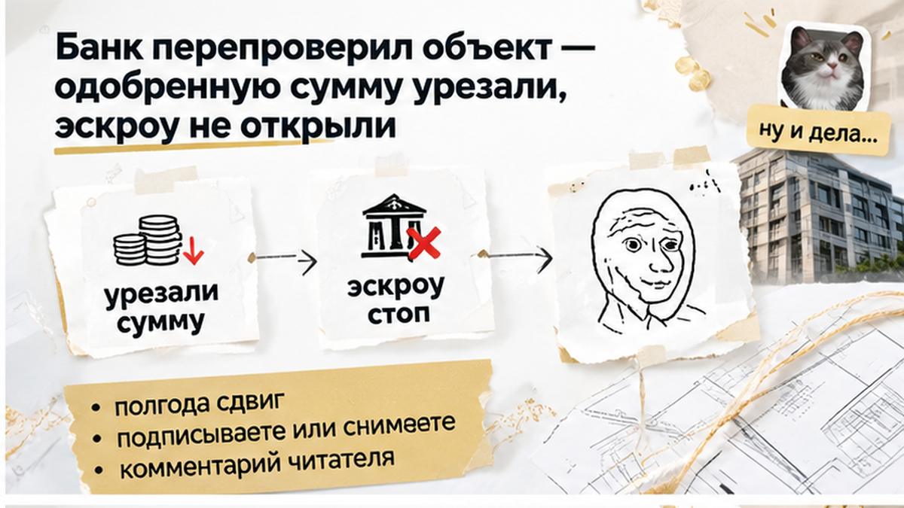
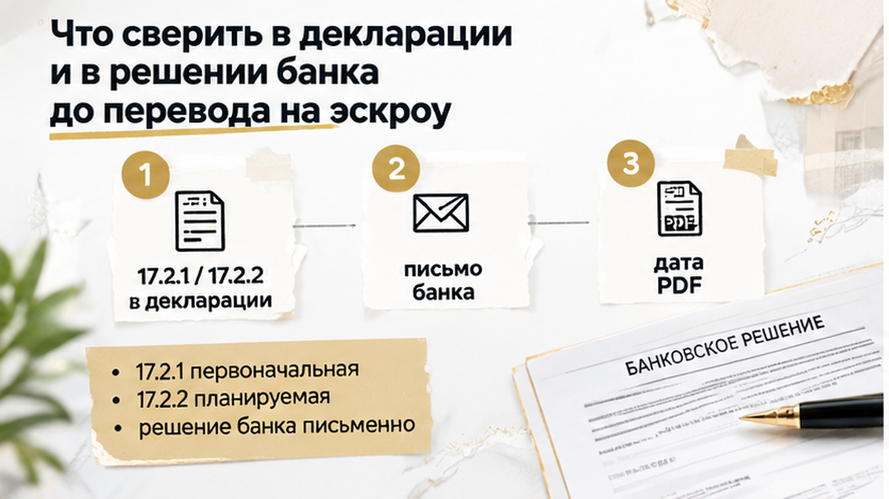

За 5 дней до ДДУ семья в Тюмени обнаружила сдвиг срока передачи квартиры на полгода — после перепроверки банк урезал ипотеку. До этого покупка выглядела почти решённой: бронь оплачена, кредит предварительно одобрен, черновик договора подготовлен. Под обещанный срок уже считали аренду и планировали переезд с детьми. Но свежая проектная декларация не совпала с документами, на которые семья опиралась при выборе квартиры. Вместо подготовки к подписи пришлось выяснять, хватит ли теперь денег на сделку и что делать с оплаченной бронью.
Я Святослав Шакин, The Риэлтор, Тюмень — разбираю покупки новостроек изнутри: что обещают до брони и с какими документами покупатель приходит к сделке. Больше разборов — в Telegram и MAX.
В офисе продаж показывали планировку и называли II квартал 2027 года. Та же дата стояла в соглашении о бронировании и черновике будущего ДДУ — договора участия в долевом строительстве. Для покупателя всё складывалось: слова менеджера подтверждались бумагами, квартира подходила, можно двигаться дальше.
Только семье нужна была не красивая дата в презентации. Ей нужно было понимать, сколько ещё платить за съёмное жильё, когда перевозить вещи и как совместить эти расходы с ипотекой. С детьми переезд не хочется собирать на ходу. Поэтому срок здесь был такой же частью выбора, как цена и планировка.
Вот где расходятся обычный покупатель и человек, который ведёт сделку. Покупатель видит одинаковый квартал в двух документах и думает: «Значит, договорились». Я смотрю дальше: что именно названо сдачей, где указан срок передачи квартиры и совпадает ли он с актуальными сведениями по дому. Одинаковые цифры в старых бумагах ещё не делают их свежими.
Бронь фиксирует свои условия, но не останавливает обновление документов по стройке. Переписка с менеджером может остаться прежней, пока в официальных сведениях уже появилась другая дата. Это не повод объявлять любую бронь бесполезной. Это повод не принимать её за окончательный ответ на все вопросы о будущей покупке.
Похожий разрыв разбирал в истории, где в брони обещали собственность на землю под ЖК, а в декларации значилась аренда. Покупатель выбирает квартиру по одной картине, а документы показывают другую. И разбираться с этим лучше не тогда, когда уже пора переводить деньги.
Предварительное одобрение семья получила раньше. Черновик договора был готов, дата подписания намечена. Впереди оставались подписание, регистрация ДДУ и перевод денег на эскроу. Когда покупка дошла до этой точки, легко решить, что основные проверки уже позади.
Но у банковского «одобрено» есть важная граница. Одно дело — банк посмотрел доходы и готов рассматривать кредит для этого заёмщика. Другое — проверил конкретную квартиру и документы по ней. Одобрение покупателя не заменяет проверку объекта. Для семейного бюджета разница существенная, хотя в разговоре оба этапа часто называют одним словом.
Проверка недвижимости обычно занимает 3–5 рабочих дней, но порядок зависит от банка и программы. Это не обещание уложиться ровно в такой срок. Если появляются новые документы, прежний расчёт нельзя просто перенести в договор и считать вопрос закрытым.
Поэтому фраза «ипотеку нам уже одобрили» здесь не снимала главный вопрос: на какую сумму банк готов финансировать именно эту покупку сейчас. В папке мог лежать аккуратно подготовленный проект ДДУ, а денег по окончательному решению могло оказаться недостаточно. Подпись под договором сама эту разницу не закрывает.
Покупатель открыл свежую декларацию на dom.rf и дошёл до раздела 17.2. В документах, с которыми семья готовилась к сделке, стоял II квартал 2027 года. Здесь планируемая передача квартиры была уже в IV квартале. Не соседний корпус в рекламной подборке, не чужое сообщение в чате — другая дата в документе по объекту.
Для покупателя слово «сдача» обычно означает простую вещь: можно получать квартиру и готовиться к переезду. Но окончание строительства, разрешение на ввод и передача квартиры — разные события. Поэтому я смотрю не только на знакомый год в документе, а на то, к какому именно событию относится дата. Иначе можно долго спорить с менеджером, имея в виду совершенно разные сроки.
В этой истории расхождение касалось именно передачи. В пункте 17.2.1 указана первоначальная дата, в 17.2.2 — планируемая. Их и сопоставляют с проектом ДДУ: какой срок предлагают подписать и что застройщик сейчас сообщает в декларации. Старый файл в папке уже не отвечал на этот вопрос, хотя при бронировании семья ориентировалась на него.
Декларация не остаётся неизменной до конца продаж. По статье 19 закона 214-ФЗ сведения обновляют ежемесячно, не позднее 10-го числа следующего месяца. Между оплатой брони и подписанием договора вполне может появиться новая редакция. При этом переписка с отделом продаж и уже выданный черновик сами собой не исправятся.
Здесь важно не перепутать неприятную новость с уже наступившей просрочкой по договору. ДДУ ещё не заключён, поэтому одно изменение декларации не даёт семье права требовать неустойку за задержку передачи. Зато оно меняет условия, на которых семья собиралась покупать. Свежий документ понадобился и банку: ипотечный менеджер запросил его для повторной проверки объекта.
До этого у семьи было предварительное одобрение ипотеки. На бытовом языке — «банк деньги даст, осталось подписать». Но банк отдельно оценивает заёмщика и отдельно недвижимость, которую тот выбрал. Первое решение не означает, что любую выбранную квартиру он профинансирует на прежних условиях.
После получения актуальной декларации объект проверили заново. Одобренную сумму кредита уменьшили. Насколько именно — в материалах этой сделки не указано, и подставлять красивую цифру здесь незачем. Для семьи последствие было вполне конкретным: между ценой квартиры и доступными деньгами появился разрыв. Прежний расчёт больше не сходился.
Это не правило «сдвинули передачу — всем урезали ипотеку». Решение зависит от банка, программы и документов по заявке. Но в этой сделке пересмотр состоялся, а старая дата в брони не обязывала банк оставить прежнюю сумму. Устное «скорее всего, всё пройдёт» уже не помогало: нужно было опираться на новое решение.
Варианты оставались: добавить собственные деньги, выбрать другой лот или заново обсуждать условия покупки. Только каждый вариант требовал отдельного расчёта, а не подписи по инерции. Деньги сверх первоначального бюджета нужно где-то взять; другой лот должен подходить семье, а не просто помещаться в уменьшенный кредит.
Семья остановилась до подписания ДДУ. Эскроу не открыли, деньги на него не размещали. Это не сделало ситуацию приятной и не вернуло всё к исходной точке: оставалась оплаченная бронь, ориентировочно 150–200 тысяч рублей. Возможность её возврата зависела от текста соглашения, а не от самого факта пересмотра ипотеки.
Но семья не вошла в договор, который уже не соответствовал её бюджету. Вопрос с бронью ещё предстояло решать, зато нехватка денег не стала обязательством доплатить по подписанному ДДУ. На этом этапе остановка сохранила возможность выбирать, а не искать недостающую сумму после оформления.

Если декларацию обновили за неделю до ДДУ и срок сдвинули на полгода — вы подписываете проект или снимаете бронь?

В такой момент хочется услышать простое: «Всё нормально, можно подписывать». Но мне для сделки нужны не успокаивающие слова, а документы, которые сходятся между собой. Свежая декларация по нужному корпусу, проект ДДУ и письменное решение банка — не три отдельные бумажки, а условия одной покупки.
В декларации смотрим раздел 17.2: 17.2.1 — первоначальная дата передачи, 17.2.2 — планируемая. Именно передачи квартиры, а не окончания стройки или разрешения на ввод дома. Для семьи разница вполне житейская: дом уже может быть построен, а переезжать в свою квартиру ещё нельзя. PDF с dom.rf стоит сохранить вместе с датой скачивания, чтобы обсуждать конкретную редакцию, а не искать потом, что было написано раньше.
В банке вопрос тоже лучше поставить прямо: «Какую сумму вы одобрили по этой квартире после получения свежей декларации?» Нужны сумма, взнос, ставка и срок — письменно, а не в пересказе менеджера. Сам перенос даты не означает ни обязательного отказа, ни заранее известного уменьшения кредита.
Пока ДДУ не заключён, новая строка в декларации сама по себе не даёт права на неустойку. А оплаченная бронь не становится автоматически возвратной: здесь открываем соглашение и читаем условия расторжения. Правила передачи жилья после ввода, в том числе ПП РФ № 2226 на 2026 год, не отвечают на главный вопрос этой семьи — подходит ли ей сделка с новым сроком и новым кредитом.
Похожий разрыв между обещанием и документом разбирали в истории про газ, обещанный раньше даты в декларации. И отдельно — про землю под ЖК: в брони обещали собственность, в декларации была аренда. Проверять приходится не красоту обещания, а то, на каких условиях вы действительно покупаете.
Если перед подписанием поменялись срок или сумма кредита, можно прислать документы в Telegram или MAX. Посмотрим, где расходятся условия, до того как вы возьмёте на себя обязательства.
| Документ | Что он даёт покупателю | Чего не заменяет |
|---|---|---|
| Реклама и карточка квартиры | Первый ориентир по сроку. | Проверки того, что означает слово «сдача» и какая дата попадёт в договор. |
| Соглашение о бронировании | Условия фиксации квартиры, оплаты и возврата брони. | Актуального решения банка и срока передачи по ДДУ. |
| Проект ДДУ | Срок передачи, который предлагают закрепить договором. | Сверки со свежей декларацией до подписания. |
| Проектная декларация | Первоначальную и планируемую даты передачи в разделе 17.2. | Самого договора с покупателем. |
| Письменное решение банка | Действующие параметры финансирования покупки. | Семейного расчёта: хватит ли своих денег и посилен ли платёж. |
Самое трудное здесь — разрешить себе паузу, когда квартира уже мысленно своя. Планировка выбрана, переезд обсуждён, за бронь заплачено. Но потраченные на выбор силы не обязывают принимать условия, которые перестали подходить.
У этой семьи осталось пространство для решения именно потому, что до эскроу они остановились. Вопрос с бронью никуда не исчез, зато не пришлось подписывать неподходящий договор ради сохранения прежнего плана. До денег ещё можно спокойно разобрать расхождения и решить, нужна ли вам эта покупка теперь.